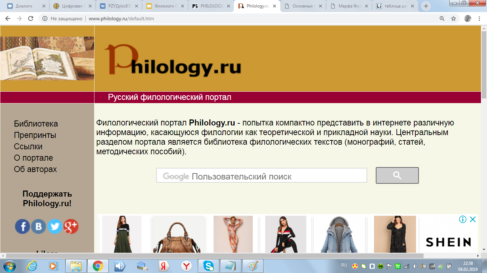
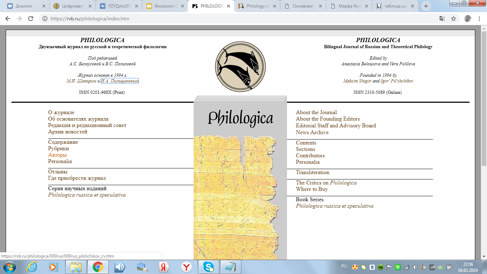

Филатова Марфа Сергеевна
Место учебы : Высшая школа эконмики филологический факультет
Научные интересные : Искусствоеведение,итальянский язык
О себе : люблю смотреть сериалы и проводить время с друзьями, мечтаю стать режиссером или работать с детьми, с удовольствием изучаю итальянский язык
Современные технологии заметно упрощают работу филолога, лишая его потребности сидеть в библиотеках в поисках нужной цитаты или фразы. Технологии повышают производительность ученого, возможность быстрого поиска информации упрощает его научную жизнь. Интернет- огромная база, которая дает возможность доступа к редким изданиям, книгам на других языках. Современные технологии обеспечивают быстрый поиск практически любой информации на разных языках и в разных формах.

Я сравнивала сайт журнала по русской и теоретической филологии с сайтом русского филологического портала.
Первый сайт дает начальную страницу полностью сразу на экране, не надо листать вниз, чтобы увидеть полную информацию о сайте.
На сайте журнала сразу же даны ссылки на конкретные разделы, например, чтобы найти автора не надо переходить несколько раз по ссылкам, как на сайте филологического портала.
С одной стороны, это удобнее, т.к. дает быстрый поиск необходимого, с другой, на портале больше конкретики и самого материала по темам. Филологический портал предоставляет ссылки на текст, который удобно оформлен и приятен для восприятия, тексты и статьи в журнале расположены прямо на сайте и не все из них удобны для чтения(как правило из-за маленького шрифта). Сайт двуязычного журнала сложнее и красивее оформлен, картинки не выбиваются, разные шрифты помогают лучшему восприятию и разделению информации. Сайт портала проще, на нем менее качественные картинки и одинаковый шрифт.

